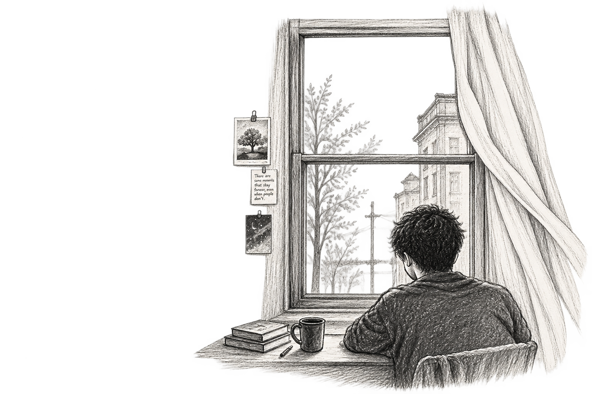

Do I Love Her?
I don't know.

Do I love her???
Do I love her???
I don't know.
I know I look for her, without meaning to….
I know I remember things, I shouldn't.
The way she laughs….
The little pauses between her words…
The expressions she makes when she's trying not to smile.
But is that love???
Or is it simply
what happens when someone, stays in your mind
for too long?
We aren't even friends.
We've spoken, sometimes.
A few conversations.
A few moments
that probably meant nothing to her, and somehow became something to me.
So how could I call it love???
Maybe I don't love her.
I don't know her enough, to love all of her….
I don't know her fears, her worst habits,
the things she hides, when nobody is watching.
Maybe I don't love her.
Maybe I love, the little pieces of her
I've been allowed to see.
Maybe I've taken those pieces, and built someone in my head…
someone who understands me..
someone who would choose me..
someone who might feel
the same way....
And maybe, that's not love.
Maybe it's loneliness, wearing her face.
But then why does it hurt, when she walks past me
like I'm just another person?
Why do I replay conversations, that lasted only minutes?
Why does one small smile from her, have the power to ruin
every sensible thought I've had, about letting go?
Do I love her???
Perhaps I don't….
Do I Love Her?
Perhaps I just love
the possibility of her………..
The possibility, that one day
she might look at me, and see what I've been too afraid to say.
And maybe that's worse....
Because if I truly loved her,
I could accept
I could accept, that she might never be mine.
But if I'm only in love
with the possibility...
What exactly am I supposed to let go of?
her?
Or the story
I secretly wrote
about us?